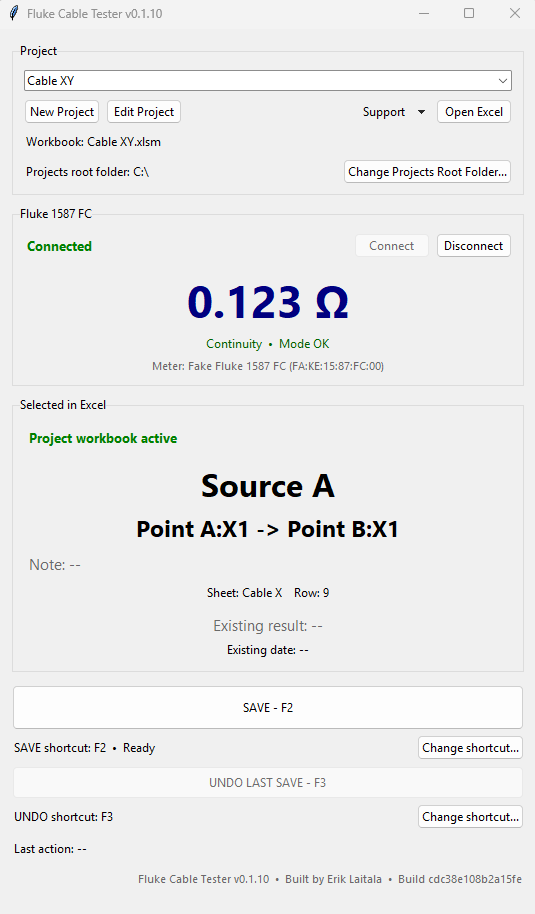
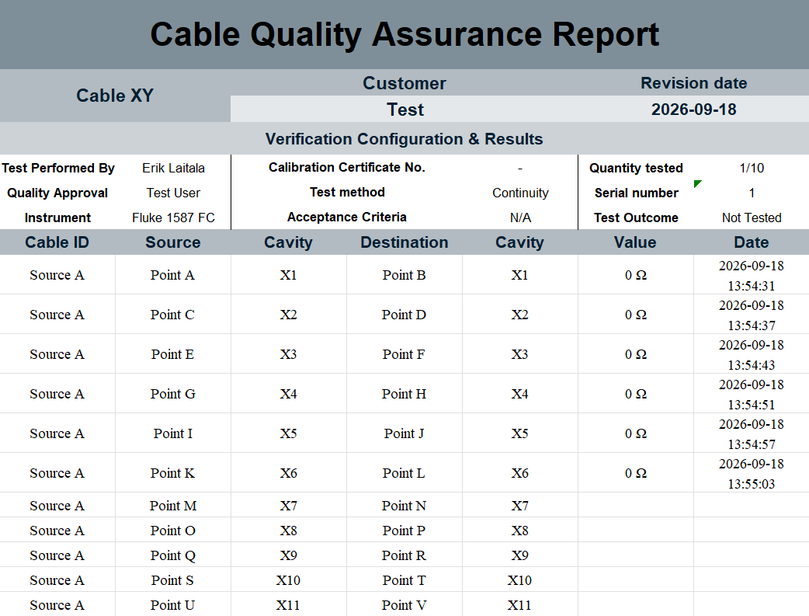

Connect directly to the meter
I knew the Fluke exposed data wirelessly because its companion app could connect to it. I scanned the BLE traffic, identified the meter and built a direct connection that could also recover when the link dropped.
Python · BLE · Excel · Production test
The workshop already had a digital meter and a production workbook, but the two did not work together. I built the missing link: a tool that reads the meter directly, understands where the operator is in the connection list and saves the right result in the right place.
← Back to projects
The application keeps the meter, the Excel connection list and the current test point in one place, so the operator does not have to move back and forth between different tools.
It shows the live Fluke value, verifies the measurement mode, reads the currently selected connection in Excel and checks whether a result already exists before allowing anything to be saved. A foot pedal saves the validated measurement and moves directly to the next cavity.

The problem was not just reading a multimeter. The complete workflow had to connect the instrument, decode its data, understand the existing Excel connection list and make it difficult for an operator to save a measurement in the wrong place.
I knew the Fluke exposed data wirelessly because its companion app could connect to it. I scanned the BLE traffic, identified the meter and built a direct connection that could also recover when the link dropped.
The BLE data was not useful in raw form. By comparing packet bytes with the physical display, I mapped the measurement value, unit, mode and other fields into data the application could understand.
The application follows the operator's position in Excel and reads the current source and destination. It only allows measurements to be written into cells that are actually intended for test results.
Before saving, the tool checks the meter mode and whether a result already exists. A successful save writes the value and timestamp, then advances to the next test point instead of silently overwriting data.
Foot-pedal and keyboard controls let the operator save without letting go of the probes. The interface was repeatedly updated from live workshop feedback rather than designed once and handed over.
Connecting reliably to the Fluke 1587 FC was one of the harder parts. The workshop tool needed to discover the correct instrument, connect to it, maintain the BLE connection and recover cleanly when communication was interrupted.
The protocol also had to be inferred experimentally. I changed what the physical instrument was displaying and compared that with the received packet until I could separate the measurement value from the unit, mode, date and other information being broadcast.
The workshop has used the tool through many versions. They test it in the real workflow, tell me what creates friction or confusion, and I change the application around that feedback.
One example was recovery and traceability. With many cables and many project files in circulation, users could occasionally delete or change the wrong thing. I added a local activity log in AppData so actions and measurements remain traceable and can be used to reconstruct results when needed.
We timed the original and automated processes. A typical cable test went from roughly 60 minutes to 6, and the application is now used daily by the workshop team.